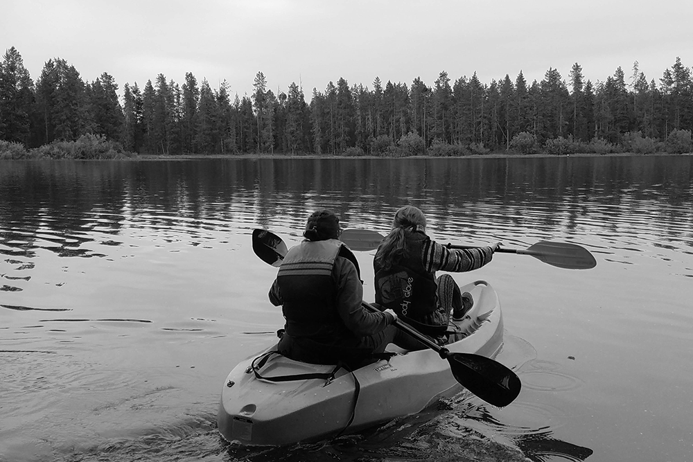

The Weather Story
Kayaking in Island Park, Idaho this summer is a must. The forest and the beautiful lake will create the perfect scene. If you go out right before nightfall, you're going to have a treat. The sun sets just beyond the trees and you'll be able to enjoy it on the water. Take a trip. Before traveling there, however, be sure to check the weather first to see if the it's going to be blistering sun or a Rainy Day.